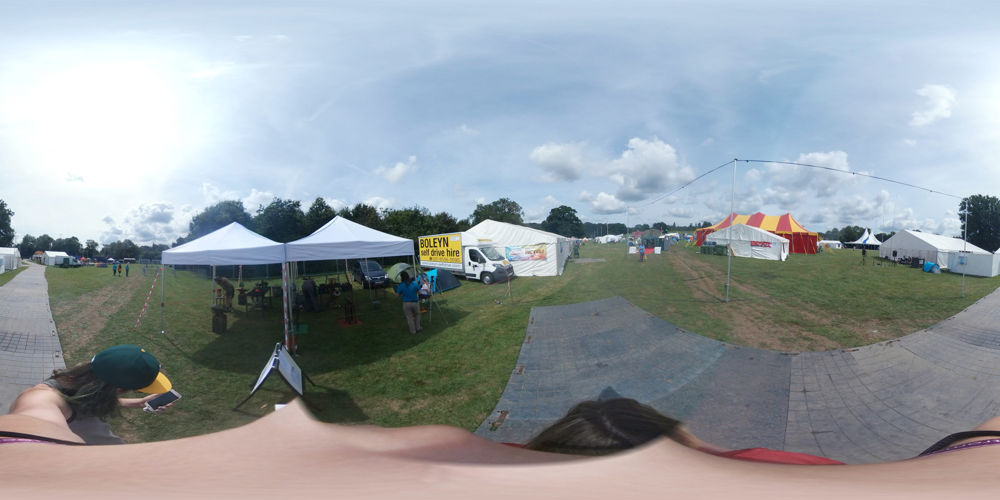
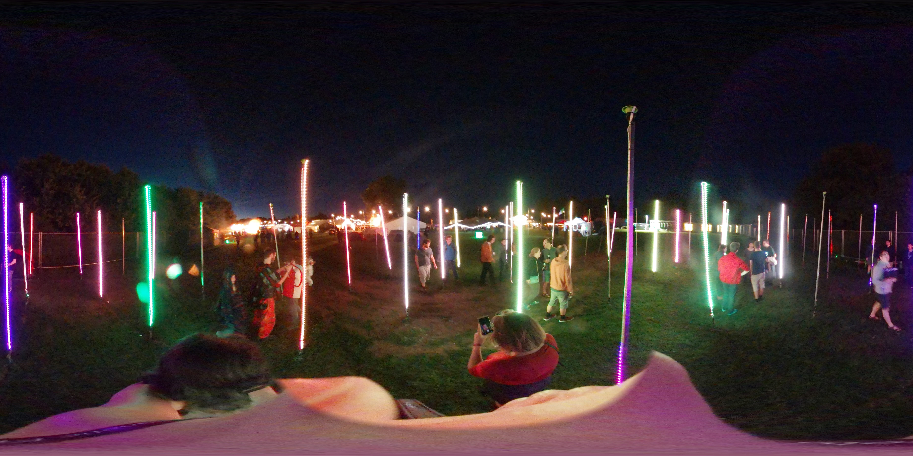

<a-scene>
	<a-assets>
		
		
		
	</a-assets>

	<a-camera wasd-controls="enabled: false;"></a-camera>
	<a-sky src="#img1"></a-sky>

</a-scene>

<script>
	var index = 0;
	var images = document.querySelectorAll('a-assets img');
	var sky = document.querySelector('a-sky');

	// ensure that mouse drags don't get read as clicks
	window.clickTime = 0;
	window.addEventListener('mousedown', function () { window.clickTime = Date.now(); });

	window.addEventListener('click', function () {
		if (Date.now() - window.clickTime >= 400) return;
		index = (index + 1) % images.length;
		sky.setAttribute('src', '#' + images[index].id);
	});

</script>